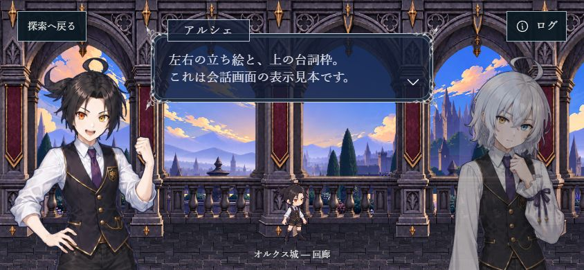
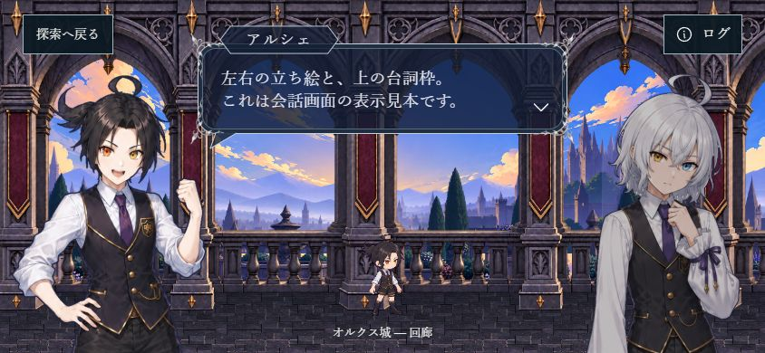
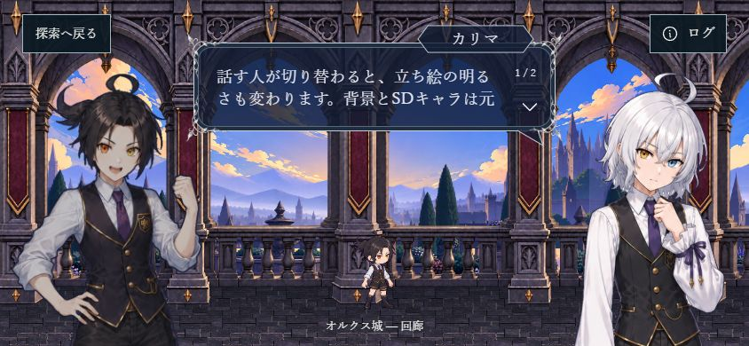
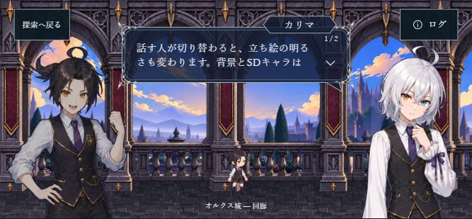
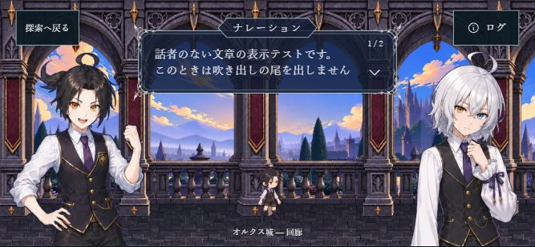

直前の見本：長方形の名前札・尾なし・聞き手の透過あり

844×390、上中央408×100。同じ背景・人物・台詞で比較。
変更前の名前札と枠の詳細
今回：尖った名前札・話者へ向く尾・輪郭内だけの暗色

ユーザー指定の3点だけ変更。銀細工原稿・人物・背景素材は未加工。
変更後の名前札と枠の詳細
右の話者：名前札と尾が右側へ

667幅の横画面：右側の話者

ナレーション：尾なし・両者を通常表示
